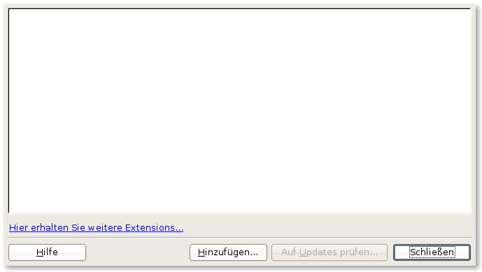
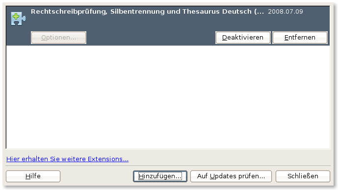
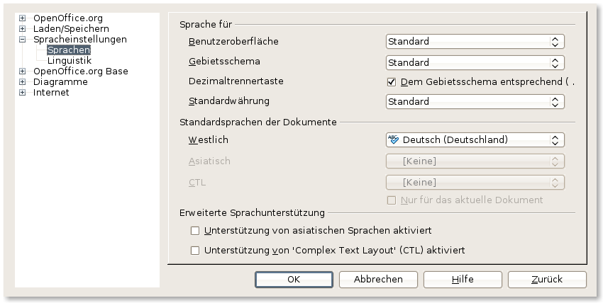

Rechtschreibprüfung, Silbentrennung und Thesaurus
Die Rechtschreibprüfung, Silbentrennung und der Thesaurus funktionieren nur mit den entsprechenden Wörterbüchern. Nicht alle Bücher werden mit in das Installationspaket von OpenOffice.org integriert. Die Pakete können leicht über die sogenannten Extensions nachinstalliert werden.
Extensions für Sprachunterstützung
- Deutsch (DE)
- Deutsch (AT)
- Deutsch (CH)
- Nur Deutsch (Frami)
- Englisch (USA)
- Französisch (Klassische und Reform von 1990)
- Italienisch
- Niederländisch
- Rumänisch
- Spanisch (Colombia)
- Spanisch (Argentinien)
- Ungarisch
Eine Übersicht aller Extensions für Sprachunterstützung finden Sie unter http://extensions.openoffice.org/dictionary
Anleitung zur Installation
Nachdem Sie die Extension heruntergeladen haben, öffnen Sie den Extension-Manger von OpenOffice.org über den Menüpunkt Extras - Extension Manager.
Klicken Sie auf die Schaltfläche Hinzufügen. Ein Dateiauswahl-Dialog erscheint über den Sie den Pfad zur Extension (Erweiterung oxt) angeben. Es wird gefragt, ob die Extension systemweit oder nur für den aktuellen Benutzer installiert werden soll.
Um zu überprüfen, ob die Installation erfolgreich war, kann unter Extras - Optionen - Spracheinstellungen - Sprachen nachgeschaut werden, ob sich ein ABC-Symbol vor der jeweiligen Sprache befindet.
